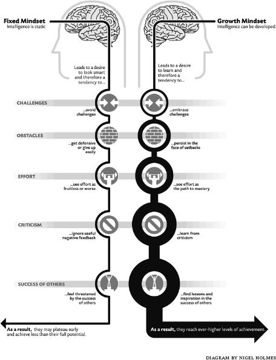

The growth mindset is based on the belief in change, and the most gratifying part of my work is watching people change. Nothing is better than seeing people find their way to things they value. This chapter is about kids and adults who found their way to using their abilities. And about how all of us can do that.
I was in the middle of first grade when my family moved. Suddenly I was in a new school. Everything was unfamiliar—the teacher, the students, and the work. The work was what terrified me. The new class was way ahead of my old one, or at least it seemed that way to me. They were writing letters I hadn’t learned to write yet. And there was a way to do everything that everyone seemed to know except me. So when the teacher said, “Class, put your name on your paper in the right place,” I had no idea what she meant.
So I cried. Each day things came up that I didn’t know how to do. Each time, I felt lost and overwhelmed. Why didn’t I just say to the teacher, “Mrs. Kahn, I haven’t learned this yet. Could you show me how?”
Another time when I was little, my parents gave me money to go to the movies with an adult and a group of kids. As I rounded the corner to the meeting place, I looked down the block and saw them all leaving. But instead of running after them and yelling, “Wait for me!” I stood frozen, clutching the coins in my hand and watching them recede into the distance.
Why didn’t I try to stop them or catch up with them? Why did I accept defeat before I had tried some simple tactics? I know that in my dreams I had often performed magical or superhuman feats in the face of danger. I even have a picture of myself in my self-made Superman cape. Why, in real life, couldn’t I do an ordinary thing like ask for help or call out for people to wait?
In my work, I see lots of young children like this—bright, seemingly resourceful children who are paralyzed by setbacks. In some of our studies, they just have to take the simplest action to make things better. But they don’t. These are the young children with the fixed mindset. When things go wrong, they feel powerless and incapable.
Even now, when something goes wrong or when something promising seems to be slipping away, I still have a passing feeling of powerlessness. Does that mean I haven’t changed?
No, it means that change isn’t like surgery. Even when you change, the old beliefs aren’t just removed like a worn-out hip or knee and replaced with better ones. Instead, the new beliefs take their place alongside the old ones, and as they become stronger, they give you a different way to think, feel, and act.
In the 1960s, psychiatrist Aaron Beck was working with his clients when he suddenly realized it was their beliefs that were causing their problems. Just before they felt a wave of anxiety or depression, something quickly flashed through their minds. It could be: “Dr. Beck thinks I’m incompetent.” Or “This therapy will never work. I’ll never feel better.” These kinds of beliefs caused their negative feelings not only in the therapy session, but in their lives, too.
They weren’t beliefs people were usually conscious of. Yet Beck found he could teach people to pay attention and hear them. And then he discovered he could teach them how to work with and change these beliefs. This is how cognitive therapy was born, one of the most effective therapies ever developed.
Whether they’re aware of it or not, all people keep a running account of what’s happening to them, what it means, and what they should do. In other words, our minds are constantly monitoring and interpreting. That’s just how we stay on track. But sometimes the interpretation process goes awry. Some people put more extreme interpretations on things that happen—and then react with exaggerated feelings of anxiety, depression, or anger. Or superiority.
Mindsets frame the running account that’s taking place in people’s heads. They guide the whole interpretation process. The fixed mindset creates an internal monologue that is focused on judging: “This means I’m a loser.” “This means I’m a better person than they are.” “This means I’m a bad husband.” “This means my partner is selfish.”
In several studies, we probed the way people with a fixed mindset dealt with information they were receiving. We found that they put a very strong evaluation on each and every piece of information. Something good led to a very strong positive label and something bad led to a very strong negative label.
People with a growth mindset are also constantly monitoring what’s going on, but their internal monologue is not about judging themselves and others in this way. Certainly they’re sensitive to positive and negative information, but they’re attuned to its implications for learning and constructive action: What can I learn from this? How can I improve? How can I help my partner do this better?
Now, cognitive therapy basically teaches people to rein in their extreme judgments and make them more reasonable. For example, suppose Alana does poorly on a test and draws the conclusion, “I’m stupid.” Cognitive therapy would teach her to look more closely at the facts by asking: What is the evidence for and against your conclusion? Alana may, after prodding, come up with a long list of ways in which she has been competent in the past, and may then confess, “I guess I’m not as incompetent as I thought.”
She may also be encouraged to think of reasons she did poorly on the test other than stupidity, and these may further temper her negative judgment. Alana is then taught how to do this for herself, so that when she judges herself negatively in the future, she can refute the judgment and feel better.
In this way, cognitive therapy helps people make more realistic and optimistic judgments. But it does not take them out of the fixed mindset and its world of judgment. It does not confront the basic assumption—the idea that traits are fixed—that is causing them to constantly measure themselves. In other words, it does not escort them out of the framework of judgment and into the framework of growth.
This chapter is about changing the internal monologue from a judging one to a growth-oriented one.
Just learning about the growth mindset can cause a big shift in the way people think about themselves and their lives.
So each year in my undergraduate course, I teach about these mindsets—not only because they are part of the topic of the course but also because I know what pressure these students are under. Every year, students describe to me how these ideas have changed them in all areas of their lives.
Here is Maggie, the aspiring writer:
I recognized that when it comes to artistic or creative endeavors I had internalized a fixed mindset. I believed that people were inherently artistic or creative and that you could not improve through effort. This directly affected my life because I have always wanted to be a writer, but have been afraid to pursue any writing classes or to share my creative writing with others. This is directly related to my mindset because any negative criticism would mean that I am not a writer inherently. I was too scared to expose myself to the possibility that I might not be a “natural.”
Now after listening to your lectures, I have decided to register for a creative writing class next term. And I feel that I have really come to understand what was preventing me from pursuing an interest that has long been my secret dream. I really feel this information has empowered me!
Maggie’s internal monologue used to say: Don’t do it. Don’t take a writing class. Don’t share your writing with others. It’s not worth the risk. Your dream could be destroyed. Protect it.
Now it says: Go for it. Make it happen. Develop your skills. Pursue your dream.
And here’s Jason, the athlete:
As a student athlete at Columbia I had exclusively the fixed mindset. Winning was everything and learning did not enter the picture. However, after listening to your lectures, I realized that this is not a good mindset. I’ve been working on learning while I compete, under the realization that if I can continually improve, even in matches, I will become a much better athlete.
Jason’s internal monologue used to be: Win. Win. You have to win. Prove yourself. Everything depends on it.
Now it’s: Observe. Learn. Improve. Become a better athlete.
And finally, here’s Tony, the recovering genius:
In high school I was able to get top grades with minimal studying and sleeping. I came to believe that it would always be so because I was naturally gifted with a superior understanding and memory. However, after about a year of sleep deprivation my understanding and memory began to not be so superior anymore. When my natural talents, which I had come to depend on almost entirely for my self-esteem (as opposed to my ability to focus, my determination or my ability to work hard), came into question, I went through a personal crisis that lasted until a few weeks ago when you discussed the different mindsets in class. Understanding that a lot of my problems were the result of my preoccupation with proving myself to be “smart” and avoiding failures has really helped me get out of the self-destructive pattern I was living in.
Tony’s internal monologue went from: I’m naturally gifted. I don’t need to study. I don’t need to sleep. I’m superior.
To: Uh-oh, I’m losing it. I can’t understand things, I can’t remember things. What am I now?
To: Don’t worry so much about being smart. Don’t worry so much about avoiding failures. That becomes self-destructive. Let’s start to study and sleep and get on with life.
Of course, these people will have setbacks and disappointments, and sticking to the growth mindset may not always be easy. But just knowing it gave them another way to be. Instead of being held captive by some intimidating fantasy about the Great Writer, the Great Athlete, or the Great Genius, the growth mindset gave them courage to embrace their own goals and dreams. And more important, it gave them a way to work toward making them real.
Adolescence, as we’ve seen, is a time when hordes of kids turn off to school. You can almost hear the stampede as they try to get as far from learning as possible. This is a time when students are facing some of the biggest challenges of their young lives, and a time when they are heavily evaluating themselves, often with a fixed mindset. It is precisely the kids with the fixed mindset who panic and run for cover, showing plummeting motivation and grades.
Over the past few years, we’ve developed a workshop for these students. It teaches them the growth mindset and how to apply it to their schoolwork. Here is part of what they’re told:
Many people think of the brain as a mystery. They don’t know much about intelligence and how it works. When they do think about what intelligence is, many people believe that a person is born either smart, average, or dumb—and stays that way for life. But new research shows that the brain is more like a muscle—it changes and gets stronger when you use it. And scientists have been able to show just how the brain grows and gets stronger when you learn.
We then describe how the brain forms new connections and “grows” when people practice and learn new things.
When you learn new things, these tiny connections in the brain actually multiply and get stronger. The more that you challenge your mind to learn, the more your brain cells grow. Then, things that you once found very hard or even impossible—like speaking a foreign language or doing algebra—seem to become easy. The result is a stronger, smarter brain.
We go on to point out that nobody laughs at babies and says how dumb they are because they can’t talk. They just haven’t learned yet. We show students pictures of how the density of brain connections changes during the first years of life as babies pay attention, study their world, and learn how to do things.
Over a series of sessions, through activities and discussions, students are taught study skills and shown how to apply the lessons of the growth mindset to their studying and their schoolwork.
Students love learning about the brain, and the discussions are very lively. But even more rewarding are the comments students make about themselves. Let’s revisit Jimmy, the hard-core turned-off student from chapter 3. In our very first workshop, we were amazed to hear him say with tears in his eyes: “You mean I don’t have to be dumb?”
You may think these students are turned off, but I saw that they never stop caring. Nobody gets used to feeling dumb. Our workshop told Jimmy, “You’re in charge of your mind. You can help it grow by using it in the right way.” And as the workshop progressed, here is what Jimmy’s teacher said about him:
Jimmy, who never puts in any extra effort and often doesn’t turn in homework on time, actually stayed up late working for hours to finish an assignment early so I could review it and give him a chance to revise it. He earned a B+ on the assignment (he had been getting C’s and lower).
Incidentally, teachers weren’t just trying to be nice to us by telling us what we wanted to hear. The teachers didn’t know who was in our growth-mindset workshop. This was because we had another workshop too. This workshop met just as many times, and taught them even more study skills. And students got just as much personal attention from supportive tutors. But they didn’t learn the growth mindset and how to apply it.
Teachers didn’t know which of their students went to which of the workshops, but they still singled out Jimmy and many of the students in the growth-mindset workshop to tell us that they’d seen real changes in their motivation to learn and improve.
Lately I have noticed that some students have a greater appreciation for improvement. . . . R. was performing below standards. . . . He has learned to appreciate the improvement from his grades of 52, 46, and 49 to his grades of 67 and 71. . . . He valued his growth in learning Mathematics.
M. was far below grade level. During the past several weeks, she has voluntarily asked for extra help from me during her lunch period in order to improve her test-taking performance. Her grades drastically improved from failing to an 84 on the most recent exam.
Positive changes in motivation and behavior are noticeable in K. and J. They have begun to work hard on a consistent basis.
Several students have voluntarily participated in peer tutoring sessions during their lunch periods or after school. Students such as N. and S. were passing when they requested the extra help and were motivated by the prospect of sheer improvement.
We were eager to see whether the workshop affected students’ grades, so, with their permission, we looked at students’ final marks at the end of the semester. We looked especially at their math grades, since these reflected real learning of challenging new concepts.
Before the workshops, students’ math grades had been suffering badly. But afterward, lo and behold, students who’d been in the growth-mindset workshop showed a jump in their grades. They were now clearly doing better than the students who’d been in the other workshop.
The growth-mindset workshop—just eight sessions long—had a real impact. This one adjustment of students’ beliefs seemed to unleash their brain power and inspire them to work and achieve. Of course, they were in a school where the teachers were responsive to their outpouring of motivation, and were willing to put in the extra work to help them learn. Even so, these findings show the power of changing mindsets.
The students in the other workshop did not improve. Despite their eight sessions of training in study skills and other good things, they showed no gains. Because they were not taught to think differently about their minds, they were not motivated to put the skills into practice.
The mindset workshop put students in charge of their brains. Freed from the vise of the fixed mindset, Jimmy and others like him could now use their minds more freely and fully.
The problem with the workshop was that it required a big staff to deliver it. This wouldn’t be feasible on a large scale. Plus, the teachers weren’t directly involved. They could be a big factor in helping to sustain the students’ gains. So we decided to put our workshop on interactive computer modules and have teachers guide their classes through the modules.
With the advice of educational experts, media experts, and brain experts, we developed the “Brainology”™ program. It presents animated figures, Chris and Dahlia—seventh graders who are cool but are having problems with their schoolwork. Dahlia is having trouble with Spanish, and Chris with math. They visit the lab of Dr. Cerebrus, a slightly mad brain scientist, who teaches them all about the brain and the care and feeding of it. He teaches them what to do for maximum performance from the brain (like sleeping enough, eating the right things, and using good study strategies) and he teaches them how the brain grows as they learn. The program, all along, shows students how Chris and Dahlia apply these lessons to their schoolwork. The interactive portions allow students to do brain experiments, see videos of real students with their problems and study strategies, recommend study plans for Chris and Dahlia, and keep a journal of their own problems and study plans.
Here are some of the seventh graders writing about how this program changed them:
After Brainology, I now have a new look at things. Now, my attitude towards the subjects I have trouble in [is] I try harder to study and master the skills. . . . I have been using my time more wisely, studying every day and reviewing the notes that I took on that day. I am really glad that I joined this program because it increased my intelligence about the brain.
I did change my mind about how the brain works and i do things differently. i will try harder because i know that the more you try the more your brain works.
ALL i can say is that Brainology changed my grades. Bon Voyage!
The Brainology program kind of made me change the way i work and study and practice for school work now that i know how my brain works and what happens when i learn.
Thank you for making us study more and helping us build up our brain! I actually picture my neurons growing bigger as they make more connections.
Teachers told us how formerly turned-off students were now talking the Brainology talk. For example, they were taught that when they studied well and learned something, they transferred it from temporary storage (working memory) to more permanent storage (long-term memory). Now they were saying to each other: “I’ll have to put that into my long-term memory.” “Sorry, that stuff is not in my long-term memory.” “I guess I was only using my working memory.”
Teachers said that students were also offering to practice, study, take notes, or pay attention more to make sure that neural connections would be made. As one student said:
“Yes the [B]rainology program helped a lot. . . . Every time I thought about not doing work I remembered that my neurons could grow if I did do the work.”
The teachers also changed. Not only did they say great things about how their students benefited, they also said great things about the insights they themselves had gained. In particular, they said Brainology was essential for understanding:
“That all students can learn, even the ones who struggle with math and with self-control.”
“That I have to be more patient because learning takes a great deal of time and practice.”
“How the brain works. . . . Each learner learns differently. Brainology assisted me in teaching for various learning styles.”
Our workshop went to children in twenty schools. Some children admitted to being skeptical at first: “i used to think it was just free time and a good cartoon but i started listening to it and i started doing what they told me to do.” In the end, almost all children reported meaningful benefits.
Is change easy or hard? So far it sounds easy. Simply learning about the growth mindset can sometimes mobilize people for meeting challenges and persevering.
The other day one of my former grad students told me a story. But first some background. In my field, when you submit a research paper for publication, that paper often represents years of work. Some months later you receive your reviews: ten or so pages of criticism—single-spaced. If the editor still thinks the paper has potential, you will be invited to revise it and resubmit it provided you can address every criticism.
My student reminded me of the time she had sent her thesis research to the top journal in our field. When the reviews came back, she was devastated. She had been judged—the work was flawed and, by extension, so was she. Time passed, but she couldn’t bring herself to go near the reviews again or work on the paper.
Then I told her to change her mindset. “Look,” I said, “it’s not about you. That’s their job. Their job is to find every possible flaw. Your job is to learn from the critique and make your paper even better.” Within hours she was revising her paper, which was warmly accepted. She tells me: “I never felt judged again. Never. Every time I get that critique, I tell myself, ‘Oh, that’s their job,’ and I get to work immediately on my job.”
But change is also hard.
When people hold on to a fixed mindset, it’s often for a reason. At some point in their lives it served a good purpose for them. It told them who they were or who they wanted to be (a smart, talented child) and it told them how to be that (perform well). In this way, it provided a formula for self-esteem and a path to love and respect from others.
The idea that they are worthy and will be loved is crucial for children, and—if a child is unsure about being valued or loved—the fixed mindset appears to offer a simple, straightforward route to this.
Psychologists Karen Horney and Carl Rogers, working in the mid-1900s, both proposed theories of children’s emotional development. They believed that when young children feel insecure about being accepted by their parents, they experience great anxiety. They feel lost and alone in a complicated world. Since they’re only a few years old, they can’t simply reject their parents and say, “I think I’ll go it alone.” They have to find a way to feel safe and to win their parents over.
Both Horney and Rogers proposed that children do this by creating or imagining other “selves,” ones that their parents might like better. These new selves are what they think the parents are looking for and what may win them the parents’ acceptance.
Often, these steps are good adjustments to the family situation at the time, bringing the child some security and hope.
The problem is that this new self—this all-competent, strong, good self that they now try to be—is likely to be a fixed-mindset self. Over time, the fixed traits may come to be the person’s sense of who they are, and validating these traits may come to be the main source of their self-esteem.
Mindset change asks people to give this up. As you can imagine, it’s not easy to just let go of something that has felt like your “self” for many years and that has given you your route to self-esteem. And it’s especially not easy to replace it with a mindset that tells you to embrace all the things that have felt threatening: challenge, struggle, criticism, setbacks.
When I was exchanging my fixed mindset for a growth one, I was acutely aware of how unsettled I felt. For example, I’ve told you how as a fixed mindsetter, I kept track each day of all my successes. At the end of a good day, I could look at the results (the high numbers on my intelligence “counter,” my personality “counter,” and so on) and feel good about myself. But as I adopted a growth mindset and stopped keeping track, some nights I would still check my mental counters and find them at zero. It made me insecure not to be able to tote up my victories.
Even worse, since I was taking more risks, I might look back over the day and see all the mistakes and setbacks. And feel miserable.
What’s more, it’s not as though the fixed mindset wants to leave gracefully. If the fixed mindset has been controlling your internal monologue, it can say some pretty strong things to you when it sees those counters at zero: “You’re nothing.” It can make you want to rush right out and rack up some high numbers. The fixed mindset once offered you refuge from that very feeling, and it offers it to you again.
Don’t take it.
Then there’s the concern that you won’t be yourself anymore. It may feel as though the fixed mindset gave you your ambition, your edge, your individuality. Maybe you fear you’ll become a bland cog in the wheel just like everyone else. Ordinary.
But opening yourself up to growth makes you more yourself, not less. The growth-oriented scientists, artists, athletes, and CEOs we’ve looked at were far from humanoids going through the motions. They were people in the full flower of their individuality and potency.
The rest of the book is pretty much about you. First are some mindset exercises in which I ask you to venture with me into a series of dilemmas. In each case, you’ll first see the fixed-mindset reactions, and then work through to a growth-mindset solution.
The First Dilemma. Imagine you’ve applied to graduate school. You applied to just one place because it was the school you had your heart set on. And you were confident you’d be accepted since many people considered your work in your field to be original and exciting. But you were rejected.
The Fixed-Mindset Reaction. At first you tell yourself that it was extremely competitive, so it doesn’t really reflect on you. They probably had more first-rate applicants than they could accept. Then the voice in your head starts in. It tells you that you’re fooling yourself, rationalizing. It tells you that the admissions committee found your work mediocre. After a while, you tell yourself it’s probably true. The work is probably ordinary, pedestrian, and they’d seen that. They were experts. The verdict is in and you’re not worthy.
With some effort you talk yourself back into your first, reasonable, and more flattering conclusion, and you feel better. In the fixed mindset (and in most cognitive therapies), that’s the end of it. You’ve regained your self-esteem, so the job is finished. But in the growth mindset, that’s just the first step. All you’ve done is talk to yourself. Now comes the learning and self-improvement part.
The Growth-Mindset Step. Think about your goal and think about what you could do to stay on track toward achieving it. What steps could you take to help yourself succeed? What information could you gather?
Well, maybe you could apply to more schools next time. Or maybe, in the meantime, you could gather more information about what makes a good application: What are they looking for? What experiences do they value? You could seek out those experiences before the next application.
Since this is a true story, I know what step the rejected applicant took. She was given some strong growth-mindset advice and, a few days later, she called the school. When she located the relevant person and told him the situation, she said, “I don’t want to dispute your decision. I just want to know, if I decide to apply again in the future, how I can improve my application. I would be very grateful if you could give me some feedback along those lines.”
Nobody scoffs at an honest plea for helpful feedback. Several days later, he called her back and offered her admission. It had indeed been a close call and, after reconsidering her application, the department decided they could take one more person that year. Plus, they liked her initiative.
She had reached out for information that would allow her to learn from experience and improve in the future. It turned out in this case that she didn’t have to improve her application. She got to plunge right into learning in her new graduate program.
The key part of our applicant’s reaction was her call to the school to get more information. It wasn’t easy. Every day people plan to do difficult things, but they don’t do them. They think, “I’ll do it tomorrow,” and they swear to themselves that they’ll follow through the next day. Research by Peter Gollwitzer and his colleagues shows that vowing, even intense vowing, is often useless. The next day comes and the next day goes.
What works is making a vivid, concrete plan: “Tomorrow during my break, I’ll get a cup of tea, close the door to my office, and call the graduate school.” Or, in another case: “On Wednesday morning, right after I get up and brush my teeth, I’ll sit at my desk and start writing my report.” Or: “Tonight, right after the dinner dishes are done, I’ll sit down with my wife in the living room and have that discussion. I’ll say to her, ‘Dear, I’d like to talk about something that I think will make us happier.’ ”
Think of something you need to do, something you want to learn, or a problem you have to confront. What is it? Now make a concrete plan. When will you follow through on your plan? Where will you do it? How will you do it? Think about it in vivid detail.
These concrete plans—plans you can visualize—about when, where, and how you are going to do something lead to really high levels of follow-through, which, of course, ups the chances of success.
So the idea is not only to make a growth-mindset plan, but also to visualize, in a concrete way, how you’re going to carry it out.
Let’s go back a few paragraphs to when you were rejected by the graduate school. Suppose your attempt to make yourself feel better had failed. You could still have taken the growth-mindset step. You can feel miserable and still reach out for information that will help you improve.
Sometimes after I have a setback, I go through the process of talking to myself about what it means and how I plan to deal with it. Everything seems fine—until I sleep on it. In my sleep, I have dream after dream of loss, failure, or rejection, depending on what happened. Once when I’d experienced a loss, I went to sleep and had the following dreams: My hair fell out, my teeth fell out, I had a baby and it died, and so on. Another time when I felt rejected, my dreams generated countless rejection experiences—real and imagined. In each instance, the incident triggered a theme, and my too-active imagination gathered up all the variations on the theme to place before me. When I woke up, I felt as though I’d been through the wars.
It would be nice if this didn’t happen, but it’s irrelevant. It might be easier to mobilize for action if I felt better, but it doesn’t matter. The plan is the plan. Remember the depressed students with the growth mindset? The worse they felt, the more they did the constructive thing. The less they felt like it, the more they made themselves do it.
The critical thing is to make a concrete, growth-oriented plan, and to stick to it.
The last dilemma seemed hard, but, basically, it was solved by a phone call. Now imagine you’re a promising quarterback. In fact, you’re the winner of the Heisman trophy, college football’s highest award. You’re the top draft pick of the Philadelphia Eagles, the team you’ve always dreamed of playing for. So what’s the dilemma?
The Second Dilemma. The pressure is overwhelming. You yearn for playing time in the games, but every time they put you in a game to try you out, you turn anxious and lose your focus. You were always cool under pressure, but this is the pros. Now all you see are giant guys coming toward you—twelve hundred pounds of giant guys who want to take you apart. Giant guys who move faster than you ever thought possible. You feel cornered . . . helpless.
The Fixed-Mindset Reaction. You torture yourself with the idea that a quarterback is a leader and you’re no leader. How could you ever inspire the confidence of your teammates when you can’t get your act together to throw a good pass or scramble for a few yards? To make things worse, the sportscasters keep asking, What happened to the boy wonder?
To minimize the humiliation you begin to keep to yourself and, to avoid the sportscasters, you disappear into the locker room right after the game.
Whoa. Is this a recipe for success? What steps could you take to make things better? Think about the resources at your disposal and how you could use them. But first, get your mindset turned around.
The Growth-Mindset Step. In the growth mindset, you tell yourself that the switch to the professionals is a huge step, one that takes a lot of adjustment and a lot of learning. There are many things you couldn’t possibly know yet and that you’d better start finding out about.
You try to spend more time with the veteran quarterbacks, asking them questions and watching tapes with them. Instead of hiding your insecurities, you talk about how different it is from college. They, in turn, tell you that’s exactly how they felt. In fact, they share their humiliating stories with you.
You ask them what they did to overcome the initial difficulties and they teach you their mental and physical techniques. As you begin to feel more integrated into the team, you realize you’re part of an organization that wants to help you grow, not judge and belittle you. Rather than worrying that they overpaid for your talent, you begin to give them their money’s worth of incredibly hard work and team spirit.
Many people with the fixed mindset think the world needs to change, not them. They feel entitled to something better—a better job, house, or spouse. The world should recognize their special qualities and treat them accordingly. Let’s move to the next dilemma and imagine yourself in this situation.
The Next Dilemma. “Here I am,” you think, “in this low-level job. It’s demeaning. With my talent I shouldn’t have to work like this. I should be up there with the big boys, enjoying the good life.” Your boss thinks you have a bad attitude. When she needs someone to take on more responsibilities, she doesn’t turn to you. When it’s time to give out promotions, she doesn’t include you.
The Fixed-Mindset Reaction. “She’s threatened by me,” you say bitterly. Your fixed mindset is telling you that, because of who you are, you should automatically be thrust into the upper levels of the business. In your mind, people should see your talents and reward you. When they don’t, it’s not fair. Why should you change? You just want your due.
But putting yourself in a growth mindset, what are some new ways you could think and some steps you could take? For example, what are some new ways you could think about effort? About learning? And how could you act on this new thinking in your work?
Well, you could consider working harder and being more helpful to people at work. You could use your time to learn more about the business you’re in instead of bellyaching about your low status. Let’s see how this might look.
The Growth-Mindset Step. But first, let’s be clear. For a long time, it’s frightening to think of giving up the idea of being superior. An ordinary, run-of-the-mill human being isn’t what you want to be. How could you feel good about yourself if you’re no more valuable than the people you look down on?
You begin to consider the idea that some people stand out because of their commitment and effort. Little by little you try putting more effort into things and seeing if you get more of the rewards you wanted. You do.
Although you can slowly accept the idea that effort might be necessary, you still can’t accept that it’s no guarantee. It’s enough of an indignity to have to work at things, but to work and still not have them turn out the way you want—now, that’s really not fair. That means you could work hard and somebody else could still get the promotion. Outrageous.
It’s a long time before you begin to enjoy putting in effort and a long time before you begin to think in terms of learning. Instead of seeing your time at the bottom of the corporate ladder as an insult, you slowly see that you can learn a lot at the bottom that could help you greatly on your rise to the top. Learning the nuts and bolts of the company could later give you a big advantage. All of our top growth-mindset CEOs knew their companies from top to bottom, inside out, and upside down.
Instead of seeing your discussions with your colleagues as time spent getting what you want, you begin to grasp the idea of building relationships or even helping your colleagues develop in ways they value. This can become a new source of satisfaction. You might say you were following in the footsteps of Bill Murray and his Groundhog Day experience.
As you become a more growth-minded person, you’re amazed at how people start to help you, support you. They no longer seem like adversaries out to deny you what you deserve. They’re more and more often collaborators toward a common goal. It’s interesting, you started out wanting to change other people’s behavior—and you did.
In the end, many people with the fixed mindset understand that their cloak of specialness was really a suit of armor they built to feel safe, strong, and worthy. While it may have protected them early on, later it constricted their growth, sent them into self-defeating battles, and cut them off from satisfying, mutual relationships.
People in a fixed mindset often run away from their problems. If their life is flawed, then they’re flawed. It’s easier to make believe everything’s all right. Try this dilemma.
The Dilemma. You seem to have everything. You have a fulfilling career, a loving marriage, wonderful children, and devoted friends. But one of those things isn’t true. Unbeknownst to you, your marriage is ending. It’s not that there haven’t been signs, but you chose to misinterpret them. You were fulfilling your idea of the “man’s role” or the “woman’s role,” and couldn’t hear your partner’s desire for more communication and more sharing of your lives. By the time you wake up and take notice, it’s too late. Your spouse has disengaged emotionally from the relationship.
The Fixed-Mindset Reaction. You’ve always felt sorry for divorced people, abandoned people. And now you’re one of them. You lose all sense of worth. Your partner, who knew you intimately, doesn’t want you anymore.
For months, you don’t feel like going on, convinced that even your children would be better off without you. It takes you a while to get to the point where you feel at all useful or competent. Or hopeful. Now comes the hard part because, even though you now feel a little better about yourself, you’re still in the fixed mindset. You’re embarking on a lifetime of judging. With everything good that happens, your internal voice says, Maybe I’m okay after all. But with everything bad that happens, the voice says, My spouse was right. Every new person you meet is judged too—as a potential betrayer.
How could you rethink your marriage, yourself, and your life from a growth-mindset perspective? Why were you afraid to listen to your spouse? What could you have done? What should you do now?
The Growth-Mindset Step. First, it’s not that the marriage, which you used to think of as inherently good, suddenly turned out to have been all bad or always bad. It was an evolving thing that had stopped developing for lack of nourishment. You need to think about how both you and your spouse contributed to this, and especially about why you weren’t able to hear the request for greater closeness and sharing.
As you probe, you realize that, in your fixed mindset, you saw your partner’s request as a criticism of you that you didn’t want to hear. You also realize that at some level, you were afraid you weren’t capable of the intimacy your partner was requesting. So instead of exploring these issues with your spouse, you turned a deaf ear, hoping they would go away.
When a relationship goes sour, these are the issues we all need to explore in depth, not to judge ourselves for what went wrong, but to overcome our fears and learn the communication skills we’ll need to build and maintain better relationships in the future. Ultimately, a growth mindset allows people to carry forth not judgments and bitterness, but new understanding and new skills.
Is someone in your life trying to tell you something you’re refusing to hear? Step into the growth mindset and listen again.
Many of our children, our most precious resource, are stuck in a fixed mindset. You can give them a personal Brainology workshop. Let’s look at some ways to do this.
Most kids who adopt a fixed mindset don’t become truly passionate believers until later in childhood. But some kids take to it much earlier.
The Dilemma. Imagine your young son comes home from school one day and says to you, “Some kids are smart and some kids are dumb. They have a worse brain.” You’re appalled. “Who told you that?” you ask him, gearing up to complain to the school. “I figured it out myself,” he says proudly. He saw that some children could read and write their letters and add a lot of numbers, and others couldn’t. He drew his conclusion. And he held fast to it.
Your son is precocious in all aspects of the fixed mindset, and soon the mindset is in full flower. He develops a distaste for effort—he wants his smart brain to churn things out quickly for him. And it often does.
When he takes to chess very quickly, your spouse, thinking to inspire him, rents the movie Searching for Bobby Fischer, a film about a young chess champion. What your son learns from the film is that you could lose and not be a champion anymore. So he retires. “I’m a chess champion,” he announces to one and all. A champion who won’t play.
Because he now understands what losing means, he takes further steps to avoid it. He starts cheating at Candy Land, Chutes and Ladders, and other games.
He talks often about all the things he can do and other children can’t. When you and your spouse tell him that other children aren’t dumb, they just haven’t practiced as much as he has, he refuses to believe it. He watches things carefully at school and then comes home and reports, “Even when the teacher shows us something new, I can do it better than them. I don’t have to practice.”
This boy is invested in his brain—not in making it grow but in singing its praises. You’ve already told him that it’s about practice and learning, not smart and dumb, but he doesn’t buy it. What else can you do? What are other ways you can get the message across?
The Growth-Mindset Step. You decide that, rather than trying to talk him out of the fixed mindset, you have to live the growth mindset. At the dinner table each evening, you and your partner structure the discussion around the growth mindset, asking each child (and each other): “What did you learn today?” “What mistake did you make that taught you something?” “What did you try hard at today?” You go around the table with each question, excitedly discussing your own and one another’s effort, strategies, setbacks, and learning.
You talk about skills you have today that you didn’t have yesterday because of the practice you put in. You dramatize mistakes you made that held the key to the solution, telling it like a mystery story. You describe with relish things you’re struggling with and making progress on. Soon the children can’t wait each night to tell their stories. “Oh my goodness,” you say with wonder, “you certainly did get smarter today!”
When your fixed-mindset son tells stories about doing things better than other children, everyone says, “Yeah, but what did you learn?” When he talks about how easy everything is for him in school, you all say, “Oh, that’s too bad. You’re not learning. Can you find something harder to do so you could learn more?” When he boasts about being a champ, you say, “Champs are the people who work the hardest. You can become a champ. Tomorrow tell me something you’ve done to become a champ.” Poor kid, it’s a conspiracy. In the long run, he doesn’t stand a chance.
When he does his homework and calls it easy or boring, you teach him to find ways to make it more fun and challenging. If he has to write words, like boy, you ask him, “How many words can you think of that rhyme with boy? Write them on separate paper and later we can try to make a sentence that has all the words.” When he finishes his homework, you play that game: “The boy threw the toy into the soy sauce.” “The girl with the cirl [curl] ate a pirl [pearl].” Eventually, he starts coming up with his own ways to make his homework more challenging.
And it’s not just school or sports. You encourage the children to talk about ways they learned to make friends, or ways they’re learning to understand and help others. You want to communicate that feats of intellect or physical prowess are not all you care about.
For a long time, your son remains attracted to the fixed mindset. He loves the idea that he’s inherently special—case closed. He doesn’t love the idea that he has to work every day for some little gain in skill or knowledge. Stardom shouldn’t be so taxing. Yet as the value system in the family shifts toward the growth mindset, he wants to be a player. So at first he talks the talk (squawking), then he walks the walk (balking). Finally, going all the way, he becomes the mindset watchdog. When anyone in the family slips into fixed-mindset thinking, he delights in catching them. “Be careful what you wish for,” you joke to your spouse.
The fixed mindset is so very tempting. It seems to promise children a lifetime of worth, success, and admiration just for sitting there and being who they are. That’s why it can take a lot of work to make the growth mindset flourish where the fixed mindset has taken root.
Sometimes the problem with a child isn’t too little effort. It’s too much. And for the wrong cause. We’ve all heard about schoolchildren who stay up past midnight every night studying. Or children who are sent to tutors so they can outstrip their classmates. These children are working hard, but they’re typically not in a growth mindset. They’re not focused on love of learning. They’re usually trying to prove themselves to their parents.
And in some cases, the parents may like what comes out of this high effort: the grades, the awards, the admission to top schools. Let’s see how you would handle this one.
The Dilemma. You’re proud of your daughter. She’s at the top of her class and bringing home straight A’s. She’s a flute player studying with the best teacher in the country. And you’re confident she’ll get into the top private high school in the city. But every morning before school, she gets an upset stomach, and some days she throws up. You keep feeding her a blander and blander diet to soothe her sensitive stomach, but it doesn’t help. It never occurs to you that she’s a nervous wreck.
When your daughter is diagnosed with an ulcer, it should be a wake-up call, but you and your spouse remain asleep. You continue to see it as a gastrointestinal issue. The doctor, however, insists that you consult a family counselor. He tells you it’s a mandatory part of your daughter’s treatment and hands you a card with the counselor’s name and number.
The Fixed-Mindset Reactions. The counselor tells you to ease up on your daughter: Let her know it’s okay not to work so hard. Make sure she gets more sleep. So you, dutifully following the instructions, make sure she gets to sleep by ten o’clock each night. But this only makes things worse. She now has less time to accomplish all the things that are expected of her.
Despite what the counselor has said, it doesn’t occur to you that she could possibly want your daughter to fall behind other students. Or be less accomplished at the flute. Or risk not getting into the top high school. How could that be good for her?
The counselor realizes she has a big job. Her first goal is to get you more fully in touch with the seriousness of the problem. The second goal is to get you to understand your role in the problem. You and your spouse need to see that it’s your need for perfection that has led to the problem. Your daughter wouldn’t have run herself ragged if she hadn’t been afraid of losing your approval. The third goal is to work out a concrete plan that you can all follow.
Can you think of some concrete things that can be done to help your daughter enter a growth mindset so she can ease up and get some pleasure from her life?
The Growth-Mindset Step. The plan the counselor suggests would allow your daughter to start enjoying the things she does. The flute lessons are put on hold. Your daughter is told she can practice as much or as little as she wants for the pure joy of the music and nothing else.
She is to study her school materials to learn from them, not to cram everything possible into her head. The counselor refers her to a tutor who teaches her how to study for understanding. The tutor also discusses the material with her in a way that makes it interesting and enjoyable. Studying now has a new meaning. It isn’t about getting the highest grade to prove her intelligence and worth to her parents. It’s about learning things and thinking about them in interesting ways.
Your daughter’s teachers are brought into the loop to support her in her reorientation toward growth. They’re asked to talk to her about (and praise her for) her learning process rather than how she did on tests. (“I can see that you really understand how to use metaphors in your writing.” “I can see that you were really into your project on the Incas. When I read it, I felt as though I were in ancient Peru.”) You are taught to talk to her this way too.
Finally, the counselor strongly urges that your daughter attend a high school that is less pressured than the one you have your eye on. There are other fine schools that focus more on learning and less on grades and test scores. You take your daughter around and spend time in each of the schools. Then she discusses with you and the counselor which ones she was most excited about and felt most at ease in.
Slowly, you learn to separate your needs and desires from hers. You may have needed a daughter who was number one in everything, but your daughter needed something else: acceptance from her parents and freedom to grow. As you let go, your daughter becomes much more genuinely involved in the things she does. She does them for interest and learning, and she does them very well indeed.
Is your child trying to tell you something you don’t want to hear? You know the ad that asks, “Do you know where your child is now?” If you can’t hear what your child is trying to tell you—in words or actions—then you don’t know where your child is. Enter the growth mindset and listen harder.
Sometimes we don’t want to change ourselves very much. We just want to be able to drop some pounds and keep them off. Or stop smoking. Or control our anger.
Some people think about this in a fixed-mindset way. If you’re strong and have willpower, you can do it. But if you’re weak and don’t have willpower, you can’t. People who think this way may firmly resolve to do something, but they’ll take no special measures to make sure they succeed. These are the people who end up saying, “Quitting is easy. I’ve done it a hundred times.”
It’s just like the chemistry students we talked about before. The ones with the fixed-mindset thought: “If I have ability, I’ll do well; if I don’t, I won’t.” As a result, they didn’t use sophisticated strategies to help themselves. They just studied in an earnest but superficial way and hoped for the best.
When people with a fixed mindset fail their test—in chemistry, dieting, smoking, or anger—they beat themselves up. They’re incompetent, weak, or bad people. Where do you go from there?
My friend Nathan’s twenty-fifth high school reunion was coming up, and when he thought about how his ex-girlfriend would be there, he decided to lose the paunch. He’d been handsome and fit in high school and he didn’t want to show up as a fat middle-aged man.
Nathan had always made fun of women and their diets. What’s the big fuss? You just need some self-control. To lose the weight, he decided he would just eat part of what was on his plate. But each time he got into a meal, the food on the plate disappeared. “I blew it!” he’d say, feeling like a failure and ordering dessert—either to seal the failure or to lift his mood.
I’d say, “Nathan, this isn’t working. You need a better system. Why not put some of the meal aside at the beginning or have the restaurant wrap it up to take home? Why not fill your plate with extra vegetables, so it’ll look like more food? There are lots of things you can do.” To this he would say, “No, I have to be strong.”
Nathan ended up going on one of those liquid crash diets, losing weight for the reunion, and putting back more than he lost afterward. I wasn’t sure how this was being strong, and how using some simple strategies was being weak.
Next time you try to diet, think of Nathan and remember that willpower is not just a thing you have or don’t have. Willpower needs help. I’ll come back to this point.
Controlling anger is something else that’s a problem for many people. Something triggers their temper and off they go, losing control of their mouths or worse. Here, too, people may vow that next time they’ll be different. Anger control is a big issue between partners and between parents and children, not only because partners and children do things that make us angry, but also because we may think we have a greater right to let loose when they do. Try this one.
The Dilemma. Imagine you’re a nice, caring person—as you probably are—usually. You love your spouse and feel lucky to have them as your partner. But when they violate one of your rules, like letting the garbage overflow before taking it out, you feel personally betrayed and start criticizing. It begins with “I’ve told you a thousand times,” then moves on to “You never do anything right.” When they still don’t seem properly ashamed, you flare, insulting their intelligence (“Maybe you aren’t smart enough to remember garbage”) and their character (“If you weren’t so irresponsible, you wouldn’t . . .” “If you cared about anyone but yourself, you’d . . .”). Seething with rage, you then bring in everything you can think of to support your case: “My father never trusted you, either,” or “Your boss was right when he said you were limited.” Your spouse has to leave the premises to get out of range of your mounting fury.
The Fixed-Mindset Reaction. You feel righteous about your anger for a while, but then you realize you’ve gone too far. You suddenly recall all the ways that your spouse is a supportive partner and feel intensely guilty. Then you talk yourself back into the idea that you, too, are a good person, who’s just slipped up—lost it—temporarily. “I’ve really learned my lesson,” you think. “I’ll never do this again.”
But believing you can simply keep that good person in the forefront in the future, you don’t think of strategies you could use next time to prevent a flare-up. That’s why the next time is a carbon copy of the time before.
Some people think about losing weight or controlling their anger in a growth-mindset way. They realize that to succeed, they’ll need to learn and practice strategies that work for them.
It’s like the growth-mindset chemistry students. They used better study techniques, carefully planned their study time, and kept up their motivation. In other words, they used every strategy possible to make sure they succeeded.
Just like them, people in a growth mindset don’t merely make New Year’s resolutions and wait to see if they stick to them. They understand that to diet, they need to plan. They may need to keep desserts out of the house. Or think in advance about what to order in restaurants. Or schedule a once-a-week splurge. Or consider exercising more.
They think actively about maintenance. What habits must they develop to continue the gains they’ve achieved?
Then there are the setbacks. They know that setbacks will happen. So instead of beating themselves up, they ask: “What can I learn from this? What will I do next time when I’m in this situation?” It’s a learning process—not a battle between the bad you and the good you.
In that last episode, what could you have done with your anger? First, think about why you got so worked up. You may have felt devalued and disrespected when your spouse shirked the tasks or broke your rules—as though they were saying to you, “You’re not important. Your needs are trivial. I can’t be bothered.”
Your first reaction was to angrily remind them of their duty. But on the heels of that was your retaliation, sort of “Okay big shot, if you think you’re so important, try this on for size.”
Your spouse, rather than reassuring you of your importance, simply braced for the onslaught. Meanwhile, you took the silence as evidence that they felt superior, and it fueled your escalation.
What can be done? Several things. First, spouses can’t read your mind, so when an anger-provoking situation arises, you have to matter-of-factly tell them how it makes you feel. “I’m not sure why, but when you do that, it makes me feel unimportant. Like you can’t be bothered to do things that matter to me.”
They, in turn, can reassure you that they care about how you feel and will try to be more watchful. (“Are you kidding?” you say. “My spouse would never do that.” Well, you can request it directly, as I’ve sometimes done: “Please tell me that you care how I feel and you’ll try to be more watchful.”)
When you feel yourself losing it, you can learn to leave the room and write down your ugliest thoughts, followed by what is probably really happening (“She doesn’t understand this is important to me,” “He doesn’t know what to do when I start to blow”). When you feel calm enough, you can return to the situation.
You can also learn to loosen up on some of your rules, now that each one is not a test of your partner’s respect for you. With time, you might even gain a sense of humor about them. For example, if your spouse leaves some socks in the living room or puts the wrong things in the recycling bins, you might point at the offending items and ask sternly, “What is the meaning of this?” You might even have a good laugh.
When people drop the good–bad, strong–weak thinking that grows out of the fixed mindset, they’re better able to learn useful strategies that help with self-control. Every lapse doesn’t spell doom. It’s like anything else in the growth mindset. It’s a reminder that you’re an unfinished human being and a clue to how to do it better next time.
Whether people change their mindset in order to further their career, heal from a loss, help their children thrive, lose weight, or control their anger, change needs to be maintained. It’s amazing—once a problem improves, people often stop doing what caused it to improve. Once you feel better, you stop taking your medicine.
But change doesn’t work that way. When you’ve lost weight, the issue doesn’t go away. Or when your child starts to love learning, the problem isn’t solved forever. Or when you and your partner start communicating better, that’s not the end of it. These changes have to be supported or they can go away faster than they appeared.
Maybe that’s why Alcoholics Anonymous tells people they will always be alcoholics—so they won’t become complacent and stop doing what they need to do to stay sober. It’s a way of saying, “You’ll always be vulnerable.”
This is why mindset change is not about picking up a few tricks. In fact, if someone stays inside a fixed mindset and uses the growth strategies, it can backfire.
Wes, a dad with a fixed mindset, was at his wit’s end. He’d come home exhausted from work every evening and his son, Mickey, would refuse to cooperate. Wes wanted quiet, but Mickey was noisy. Wes would warn him, but Mickey would continue what he was doing. Wes found him stubborn, unruly, and not respectful of Wes’s rights as a father. The whole scene would disintegrate into a shouting match and Mickey would end up being punished.
Finally, feeling he had nothing to lose, Wes tried some of the growth-oriented strategies. He showed respect for Mickey’s efforts and praised his strategies when he was empathic or helpful. The turnaround in Mickey’s behavior was dramatic.
But as soon as the turnaround took place, Wes stopped using the strategies. He had what he wanted and he expected it to just continue. When it didn’t, he became even angrier and more punitive than before. Mickey had shown he could behave and now refused to.
The same thing often happens with fixed-mindset couples who start communicating better. Marlene and Scott were what my husband and I call the Bickersons. All they did was bicker: “Why don’t you ever pick up after yourself?” “I might if you weren’t such a nag.” “I wouldn’t have to nag if you did what you were supposed to do.” “Who made you the judge of what I’m supposed to do?”
With counseling, Marlene and Scott stopped jumping on the negatives. More and more, they started rewarding the thoughtful things their partner did and the efforts their partner made. The love and tenderness they thought were dead returned. But once it returned, they reverted. In the fixed mindset, things shouldn’t need such effort. Good people should just act good and good relationships should just unfold in a good way.
When the bickering resumed, it was fiercer than ever because it reflected all of their disappointed hopes.
Mindset change is not about picking up a few pointers here and there. It’s about seeing things in a new way. When people—couples, coaches and athletes, managers and workers, parents and children, teachers and students—change to a growth mindset, they change from a judge-and-be-judged framework to a learn-and-help-learn framework. Their commitment is to growth, and growth takes plenty of time, effort, and mutual support to achieve and maintain.
In chapter 7, I talked about the “false growth mindset.” If you remember, my colleague Susan Mackie was encountering people who claimed to have a growth mindset but who, upon closer inspection, did not. Once alerted, I started seeing false growth mindset everywhere and I understood why it was happening. Everyone wants to seem enlightened, in the know. Maybe as a parent, educator, coach, or business professional, having a growth mindset was expected or admired.
Or maybe it was my fault. Did I make the change to a growth mindset seem too easy, so that people didn’t realize that a journey was required? Or maybe people didn’t know how to take the journey. So let’s talk more about that journey.
You’ll be surprised to hear me say this. The first step is to embrace your fixed mindset. Let’s face it, we all have some of it. We’re all a mixture of growth and fixed mindsets and we need to acknowledge that. It’s not a shameful admission. It’s more like, welcome to the human race. But even though we have to accept that some fixed mindset dwells within, we do not have to accept how often it shows up and how much havoc it can wreak when it does.
The second step is to become aware of your fixed-mindset triggers. When does your fixed-mindset “persona” come home to roost?
■ It could be when you’re thinking about taking on a big, new challenge. Your fixed-mindset persona might appear and whisper, “Maybe you don’t have what it takes, and everyone will find out.”
■ It could be when you’re struggling with something and you keep hitting dead ends. Your fixed-mindset persona might fly in and offer its advice: “Give it up. It’s just making you feel frustrated and ashamed. Do something easier.”
■ How about when you feel like you’ve failed decisively? Lost your job. Lost a cherished relationship. Messed up in a very big way. It’s a rare person who doesn’t have a fixed-mindset episode. And we all know very well what that fixed mindset says to us: “You’re not the person you thought you were—and you never will be.”
■ What about when you encounter someone who’s a lot better than you in the very area you pride yourself on? What does that fixed-mindset voice say to you? Does it tell you that you’ll never be as good? Does it make you hate that person just a little?
■ What about our fixed mindset toward others? If we’re educators, what happens after a high-stakes test? Do we judge who’s smart and who isn’t? If we’re managers, what happens during and after a big project? Do we judge our employees’ talent? If we’re parents, do we pressure our kids to prove they’re smarter than others and make them feel judged based on their grades and test scores?
Think about it. What’s a recent time you were triggered into a fixed mindset? What happened to summon your fixed-mindset persona? What did it whisper in your ear, and how did it make you feel?
When I asked people to tell me when their fixed-mindset persona usually shows up, here’s what they said:
“When I’m under pressure, my fixed-mindset persona appears. He fills my head with noise and keeps me from paying attention to the work I have to do. Then I feel like I can’t accomplish anything. Feelings of anxiety and sadness also attract him. He attempts to weaken me when I’m already feeling down. He makes comments like ‘You don’t have the ability to grasp difficult concepts. You have reached your limit.’ ” (By the way, this was a woman who thought of her fixed-mindset persona as a male.)
“Whenever I demonstrate my laziness through procrastination, whenever I have a disagreement with someone, whenever I’m too shy to talk to anyone at a party, my fixed mindset persona shows up. . . . He tells me, ‘Your FAILURE doesn’t define you.’ Of course, he yells the word ‘failure,’ and whispers the rest.”
“Whenever I fail to live up to the image that she—my fixed-mindset persona—concocted for me, she makes me feel stressed, defensive, and unmotivated. She doesn’t allow me to take risks that may affect our reputation as a successful person. She doesn’t let me speak out for fear of being wrong. She forces me to look like a person who can understand and do everything effortlessly.”
“When we have a work deadline and my team is under the gun, my fixed-mindset persona sits in judgment. Instead of empowering my team, I become a harping perfectionist—no one is doing it right, no one is working fast enough. Where are all those breakthrough ideas? We’ll never make it. As a result, I often just take over and do a lot of the work myself. Needless to say, it doesn’t do wonders for team morale.” (We will hear more from this team leader and one of his team members in a moment.)
As you come to understand your triggers and get to know your persona, don’t judge it. Just observe it.
Now give your fixed-mindset persona a name.
You heard me correctly.
I watched as Susan Mackie worked with financial executives who had given their fixed-mindset personas names. They were talking about what triggers their personas, and the top guy said, “When we’re in a crunch, Duane shows up. He makes me supercritical of everyone, and I get bossy and demanding rather than supportive.” A female team member quickly responded: “Yes, and when your Duane shows up, my Ianni comes roaring out. Ianni is the macho guy who makes me feel incompetent. So your Duane brings out my Ianni and I become cowering and anxious, which infuriates Duane.” And on went this amazing conversation. These sophisticated professionals talked about when their named persona showed up, how it made them feel and act, and how it affected others around them. By the way, once they were able to understand each other’s triggers and personas, they could move their interactions to another level and the morale in this unit went up by leaps and bounds.
Every fall I teach a freshman seminar—sixteen brand-new Stanford students, very eager and very nervous. Each week I give them a different assignment for a short paper: Find something important about yourself that you’d like to change and take the first step. . . . Do something outrageously growth mindset in the service of what you’d like to change. . . . Project yourself twenty-five years into the future and write me a letter about where you are in your life and all the struggles, disappointments, hardships, and failures you’ve encountered along the way.
This year I tried a new one. In the past, I had assigned a paper that asked students to reflect on their mindsets, and I’d always had a few of them laying claim to a long-standing and total growth mindset. But this year I asked them to identify their fixed-mindset triggers and to give their fixed-mindset persona a name. It was fascinating. Not one student claimed to have no triggers or persona. All of them were able to write eloquently (and painfully) about their fixed-mindset persona, its triggers, and its impact.
“Meet Gertrude, my cagey, histrionic, self-aggrandizing fixed-mindset persona. She sneaks into my subconscious and undermines me. The name Gertrude means ‘strong spear,’ which reflects her insistence on unwavering, natural strength. She detests hard work, second place, and imperfections. Any whiff of failure or imperfection can trigger Gertrude’s entrance. Three seconds slower in a swim race? No shot at the varsity team. Didn’t draw as good a self-portrait as another girl in my class? Art isn’t your thing. Couldn’t use as many big words as my older sister? You’ll never be as smart as her. Gertrude convinces me that failure is definitive. One mistake can take away my future success.”
“Almost like marriage, I know Sugardaddy will be with me through thick and thin, sickness and health, and life and death. He comes forth when I step out of my comfort zone, get criticized, or experience a failure, causing me to become defensive, lash out at others, or stagnate. Sugardaddy finds peace in never leaving his comfort zone, but his views conflict more and more with mine as his rigid guidelines try to keep me boxed in his stand-still world.”
“Failure, especially public failure, is my main fixed-mindset trigger. That’s when Henrietta comes out. She is my critical grandmother, and in the fixed mindset I remind myself more of her than I’d care to admit. My Henrietta persona is quick to blame others to preserve her ego. She rejects failure instead of embracing it, and makes me worry that if anyone ever sees me fail they will deem me a failure.”
“My fixed-mindset persona is Z, the mirror image of my first initial, S. Z shows up when I least require her, like after a failed attempt, a rejection, or a missed opportunity. I’ve always been an avid writer—the editor of my high school newsletter and the author of a now-published novel. So when the chance to be a part of The Stanford Daily [the school newspaper] arrived, I was thrilled to apply. I worked very hard on the essays for the application and felt they were well written. Thus, when I awoke to the thundering knocks at 7 a.m. on a Friday morning and I heard the screaming of ‘Stanford Daily,’ my heart skipped a happy beat. As my roommate opened the door, the reps from the newspaper yelled out, ‘Welcome to The Stanford Daily.’ To her. As this happened, Z was screaming too, but it was ‘Stupid, stupid, stupid. How could you think you’re capable of getting into the Daily?’ Z was especially ferocious since my roommate spent exactly half an hour on her essays and even asked me for ideas for them.” (P.S. For a later assignment—to do something “outrageously growth mindset”—S actually contacted The Stanford Daily to see if they needed any new writers. They did and she got the job! I am still thrilled by her courage in the face of the painful rejection.)
“Anything that triggers self-doubt triggers my fixed mindset, which triggers more self-doubt. I’ve decided to name my doubt guy Dale Denton, Seth Rogen’s character in Pineapple Express. Picturing my fixed mindset as a lazy, bumbling slob of a guy sitting in the corner of my brain helps me battle against him. Dale produces a constant stream of doubt-provoking statements. Whispers of ‘What if you can never repeat that success?’ trail behind every successful outcome. And when an endeavor veers in the wrong direction, Dale is always present to help the doubt blossom.”
Take a moment to think carefully about your own fixed-mindset persona. Will you name it after someone in your life? A character from a book or a movie? Will you give it your middle name—it’s part of you but not the main part of you? Or perhaps you might give it a name you don’t like, to remind you that that’s not the person you want to be.
You’re in touch with your triggers and you’re excruciatingly aware of your fixed-mindset persona and what it does to you. It has a name. What happens now? Educate it. Take it on the journey with you.
The more you become aware of your fixed-mindset triggers, the more you can be on the lookout for the arrival of your persona. If you’re on the verge of stepping out of your comfort zone, be ready to greet it when it shows up and warns you to stop. Thank it for its input, but then tell it why you want to take this step and ask it to come along with you: “Look, I know this may not work out, but I’d really like to take a stab at it. Can I count on you to bear with me?”
When you hit a setback, the chances are excellent it’s going to show up again. Don’t suppress it or ban it. Just let it do its thing. Let it do its song and dance, and when it settles down a bit, talk to it about how you plan to learn from the setback and go forward: “Yes, yes, it’s possible that I’m not so good at this (yet), but I think I have an idea of what to do next. Let’s just try it.”
When you’re under pressure and you’re afraid your team will let you down, tell them that Duane is in full bloom and ask them what they need from you to do their best work. Try to understand and respect where they are and what they’re thinking, and try to support and guide them. Keep talking to Duane so he can calm down—and then help you cut them some slack and contribute to team process.
Remember that your fixed-mindset persona was born to protect you and keep you safe. But it has developed some very limiting ways of doing that. So educate it in the new growth mindset ways that it can support you: in taking on challenges and sticking to them, bouncing back from failure, and helping and supporting others to grow. Understand the persona’s point of view, but slowly teach it a different way of thinking, and take it with you on your journey to a growth mindset.
Understanding that everyone has a fixed-mindset persona can give us more compassion for people. It allows us to understand their struggles. I mentioned in a previous chapter how upset I was to learn that some educators were scolding children for acting in fixed-mindset ways. They would point to the mindset chart in the front of the room and tell the kids to shape up.
Compare this to the following teacher. Over a period of time, this teacher had her grade school class talk about their fixed-mindset triggers and then give their personas a name. One boy wouldn’t do it, which was very much in line with a lot of his behavior. There were many things he wouldn’t do no matter how much the teacher gently encouraged him. For weeks he sat there mute while every other student in the class talked about and drew pictures of their little fixed-mindset personas—Scared Sally, Lazy Larry, Anxious Andy, or Helpless Hannah. But the teacher let him know that she was there for him whenever he was ready, and one day, out of nowhere, he said, “Dumping Dan.” “What?” the teacher asked. “Dumping Dan,” he repeated. “Whenever I do something, I do it wrong. I can’t do anything right. That’s why everyone dumps on me.” Whenever he tried to do his schoolwork, it seemed that Dumping Dan would yell at him so loudly that he couldn’t proceed. The teacher rushed to his side and worked with him and Dumping Dan so that eventually Dan relented, gave him some peace, and allowed him to work. After that, his growth was tremendous.
How many students or employees are considered incompetent, stubborn, or defiant when they just don’t know how to function well under the current conditions? How often do we threaten, punish, or write off these people rather than helping them work it through or helping them find the conditions under which they can thrive?
Every one of us has a journey to take.
■ It starts by accepting that we all have both mindsets.
■ Then we learn to recognize what triggers our fixed mindset. Failures? Criticism? Deadlines? Disagreements?
■ And we come to understand what happens to us when our fixed-mindset “persona” is triggered. Who is this persona? What’s its name? What does it make us think, feel, and do? How does it affect those around us?
■ Importantly, we can gradually learn to remain in a growth-mindset place despite the triggers, as we educate our persona and invite it to join us on our growth-mindset journey.
■ Ideally, we will learn more and more about how we can help others on their journey, too.
Let’s say you’ve named and tamed your fixed-mindset persona. That’s great, but please don’t think your journey is complete. For your growth mindset to bear fruit, you need to keep setting goals—goals for growth. Every day presents you with ways to grow and to help the people you care about grow. How can you remember to look for these chances?
First, make a copy of this graphic summary of the two mindsets, which was created by the wonderful Nigel Holmes, and tape it to your mirror. Each morning, use it to remind yourself of the differences between the fixed and growth mindsets. Then, as you contemplate the day in front of you, try to ask yourself these questions. If you have room on your mirror, copy them over and tape them there, too.
What are the opportunities for learning and growth today? For myself? For the people around me?
As you think of opportunities, form a plan, and ask:
When, where, and how will I embark on my plan?
When, where, and how make the plan concrete. How asks you to think of all the ways to bring your plan to life and make it work.
As you encounter the inevitable obstacles and setbacks, form a new plan and ask yourself the question again:
Regardless of how bad you may feel, chat with your fixed-mindset persona and then do it!
And when you succeed, don’t forget to ask yourself:
What do I have to do to maintain and continue the growth?

Remember, as Alex Rodriguez, the baseball player, wisely said: “You either go one way or the other.” You might as well be the one deciding the direction.
Change can be tough, but I’ve never heard anyone say it wasn’t worth it. Maybe they’re just rationalizing, the way people who’ve gone through a painful initiation say it was worth it. But people who’ve changed can tell you how their lives have been enhanced. They can tell you about things they have now that they wouldn’t have had, and ways they feel now that they wouldn’t have felt.
Did changing toward a growth mindset solve all my problems? No. But I know that I have a different life because of it—a richer one. And that I’m a more alive, courageous, and open person because of it.
It’s for you to decide whether change is right for you now. Maybe it is, maybe it isn’t. But either way, keep the growth mindset in your thoughts. Then, when you bump up against obstacles, you can turn to it. It will always be there for you, showing you a path into the future.